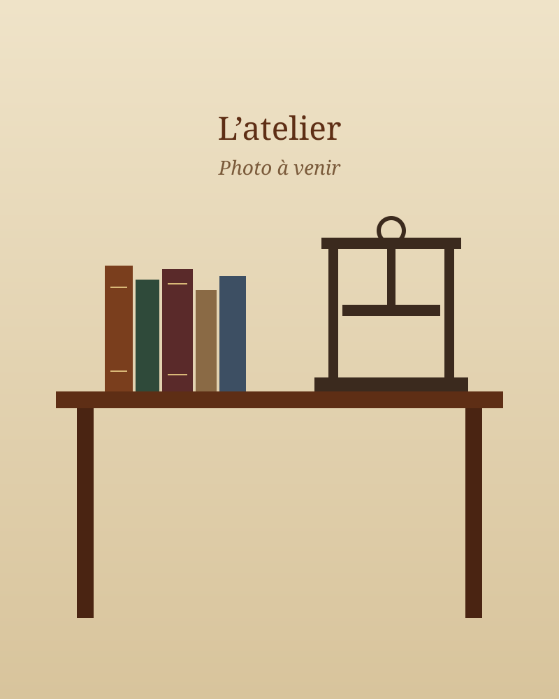

Les outils
Cousoir, presses, plioirs, couteaux à parer, fers et palettes à dorer : des outils traditionnels, dont certains ont plusieurs générations d’usage.
À propos
Au cœur de Dun-sur-Meuse, un atelier où le temps se prend pour bien faire.
Passionné par le livre et par les métiers de la main, François Battistini a fondé Au Fil de la Reliure à Dun-sur-Meuse, dans la Meuse.
[Texte à compléter : parcours, formation, années de métier, ce qui l’a amené à la reliure…]
Relieur, doreur et restaurateur, il travaille aussi bien pour les particuliers que pour les collectivités, les associations ou les professionnels : du livre de famille à restaurer au registre municipal à relier.

Cousoir, presses, plioirs, couteaux à parer, fers et palettes à dorer : des outils traditionnels, dont certains ont plusieurs générations d’usage.
Cuirs, toiles, papiers marbrés et cartons sélectionnés pour leur tenue dans le temps, colles et fils adaptés aux livres anciens.
Feuille d’or et fers chauffés : la dorure se fait à la main, lettre après lettre, filet après filet.
Prendre le temps, écouter l’histoire de chaque livre, choisir la solution juste plutôt que la plus spectaculaire : c’est ainsi que se transmet un savoir-faire.
Les tarifs sont établis sur devis, gratuitement, selon l’ouvrage, son état et la finition souhaitée. N’hésitez pas à passer à l’atelier ou à appeler pour en parler.